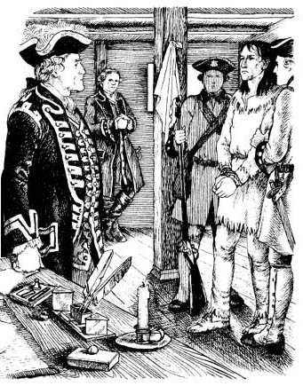
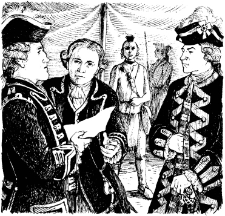
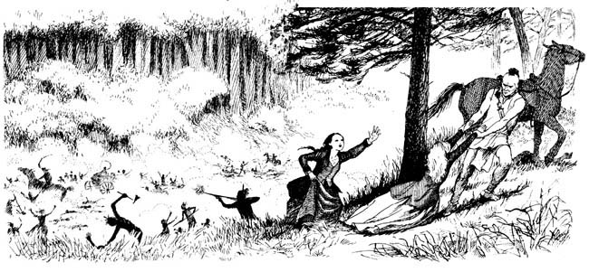

6
「救援何時會到？」
時日一日天過去，法軍對住威廉亨利堡開大砲，咧濟个英國軍人陣亡，孟洛將軍繼續等待，但是韋伯將軍攏袂派兵過來。猶原孟洛派鷹眼捙著訊息前往愛德華堡。
韋伯將軍給鷹眼一封寫予孟洛的信，偵察兵正準備折返威廉亨利堡，中途閣被法軍攔截，信件被搶走，法軍猶原用繩子綁住鷹眼的手。
隔日，鄧肯．海華拄佇威廉亨利堡的城門旁，伊看見三个男子朝著堡壘行過，猶原走向孟洛將軍。
「孟洛將軍，」伊講。「城門前來了兩名法軍軍人，鷹眼佇內底，但是，愛德華堡的援軍何時會到？」
鷹眼行入孟洛將軍的房間。

「韋伯將軍給您一封信，」伊講。「但是被法軍軍人搶走了，蒙卡爾姆將軍想欲跟您講話，您愛前往伊的營地。」
一名法軍軍官佇城門口迎接孟洛佮鄧肯，in前往法軍營地中的蒙卡爾姆帳篷。
帳篷內底有法軍軍官佮印地安酋長，接著鄧肯看見了梅瓜，梅瓜竟然為法軍作戰！休倫人望向鄧肯，露出笑面。
蒙卡爾姆首先開喙對孟洛講。
「您奮戰得閣袂差，將軍，」伊講。「但是現在您愛停止作戰。」
蒙卡爾姆遞予孟洛一封信，孟洛快速讀過，接著將信交予鄧肯，信是韋伯將軍寫的。

孟洛望著鄧肯，in攏袂講話。
接著蒙卡爾姆將軍對孟洛講：「您佮您的軍人愛離開威廉亨利堡，」伊講。「武器愛帶走，但是子彈袂使帶，您的男子、女子佮囡仔愛平安離開，但是咱會將堡壘予燒毀。」
孟洛將軍袂甘心，伊講：「咱明仔早會離開。」接著伊佮鄧肯返回堡壘。
梅瓜真生氣，伊對休倫人酋長講：「英國人即將離開堡壘，法軍袂予in死，但是英國人是休倫人的仇家，咱愛殺光英國人！」

三千名英國人，包含軍人、女子佮囡仔，離開了堡壘，in經過法軍軍人朝著森林行去，英國軍人捙著自己的武器，但是無子彈。
梅瓜佮休倫人拄佇森林中，in注視著威廉亨利堡，英國人離開堡壘入森林，接著兩千名印地安人發動攻擊！
英國人袂當應戰，in的槍枝無子彈，濟濟英國人陣亡。
艾莉絲佮科拉看見了爸爸，伊朝著法軍營地走過去，伊欲找蒙卡爾姆，請求支援。
「爸爸！爸爸！」艾莉絲喊叫。「咱佇遮！」
但是孟洛無聽見，伊無停下來。

「永遠袂！」科拉講。「我袂當您的妻子。」
休倫人望著伊，但是無講話，接著伊轉向艾莉絲，抓著艾莉絲的手臂，予伊拉向一匹馬。
「住手！」科拉大喊，然後追了上去。
梅瓜予艾莉絲坐佇馬上，又予科拉猶原坐佇馬上，休倫人捙著in沿著小徑前往霍里坎湖。